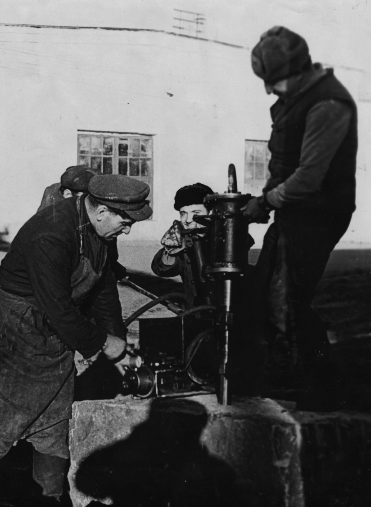

Golovinski
History

How "Golovinski," a company with over 130 years of history, discovered the magical Volga Blue material and transformed from a small workshop of two partners into a global international business